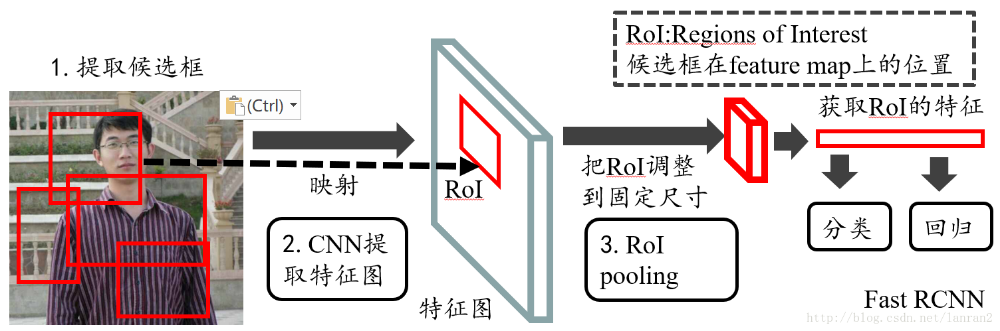
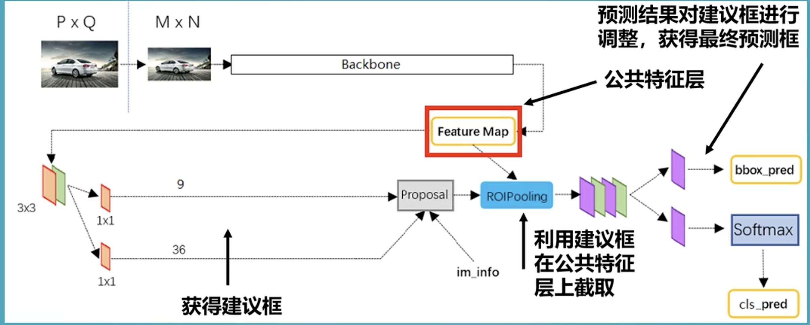
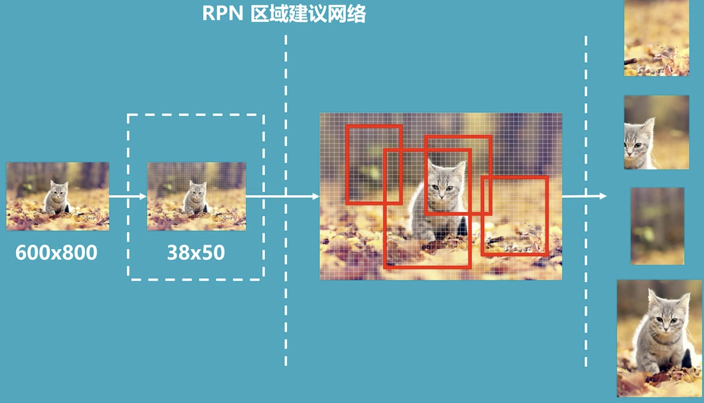
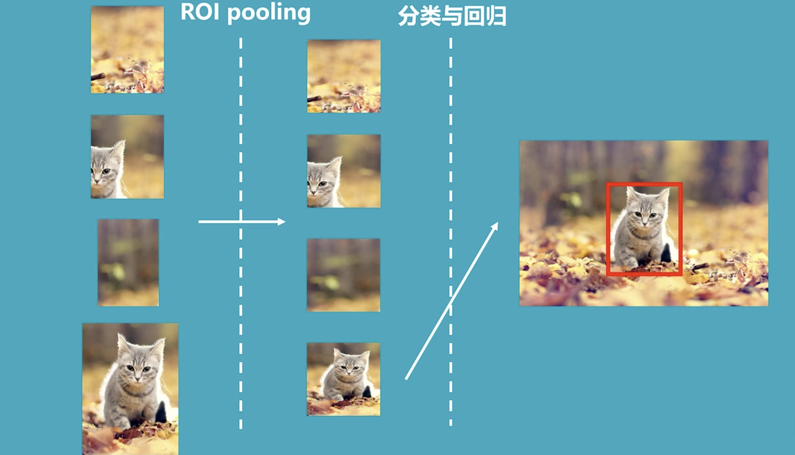
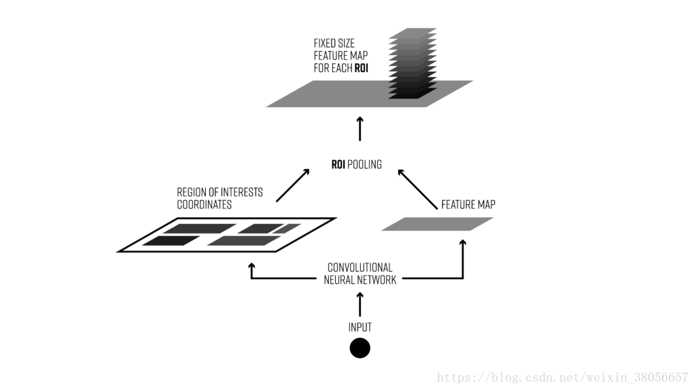
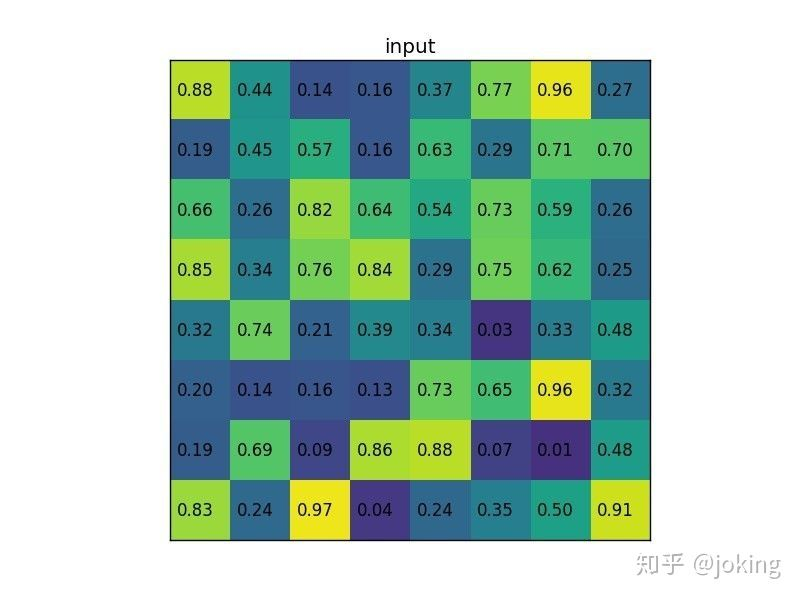
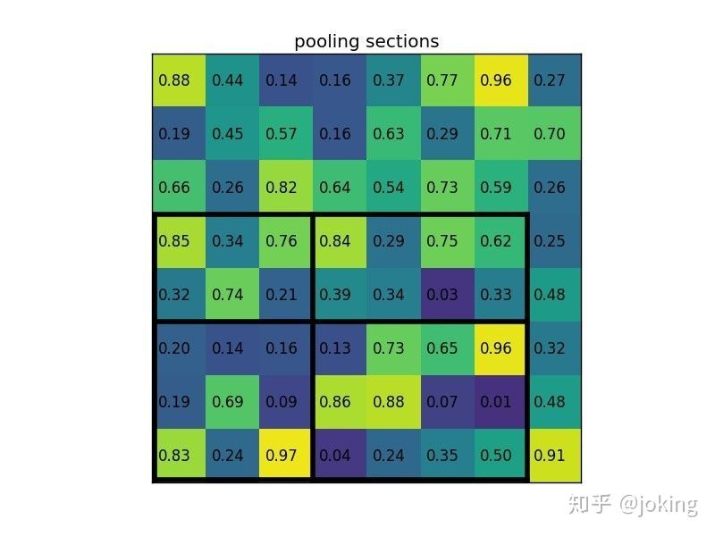
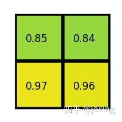

FasterRCNN

Faster-RCNN是一个非常有效的目标检测算法，虽然是一个比较早的论文， 但它至今仍是许多目标检测算法的基础。
Faster-RCNN作为一种two-stage的算法，与one-stage的算法相比，two-stage的算法更加复杂且速度较慢，但是检测精度会更高。
事实上也确实是这样，Faster-RCNN的检测效果非常不错，但是检测速度与训练速度有待提高。

Feature map通过主干提取网络获得
9通道是9个先验框，36是9个先验框的调整参数（cx,cy,dw,dh）。
proposal中的先验框在Feature map中进行截取。
ROIPooling将截取到的信息resize到一个相同的大小


Faster-RCNN可以采用多种的主干特征提取网络，常用的有VGG，Resnet，Xception等等.
Faster-RCNN的主干特征提取网络部分只包含了长宽压缩了四次的内容，第五次压缩后的内容在ROI中使用。即Faster-RCNN在主干特征提取网络所用的网络层如图所示。
一些理解
如果采用resnet网络，resnet网络的输出为（x//16，y//16，1024）
在实际应用中：
- 分类损失=正负样本的binary_crossentropy之和（正样本为检测出来的目标，副样本为背景）
- 回归损失=正样本的smooth_l1_loss之和
RPN网络的输出为anchor的置信度和尺寸修正参数。这些参数的结果通过decode后就是预测框。这些预测框类似于fastRCNN中的预测框的信息。
最终结果的输出为每个class的置信度和框的尺寸修正参数。
ROI pooling layer
感兴趣区域池（也称为RoI pooling）是使用卷积神经网络在对象检测任务中广泛使用的操作。例如，在单个图像中检测多个汽车和行人。其目的是对非均匀尺寸的输入执行最大池化以获得固定尺寸的特征图（例如7×7）。
ROI pooling作用有两点：
（1）根据输入image，将ROI映射到feature map对应位置，映射是根据image缩小的尺寸来的；
（2）将得到的RoI映射在feature map上得到的RoI feature region输出统一大小的特征区域（由于区域提议得到的RoI大小和尺度比例不尽相同，无法输入FC层进行一维化操作）
ROI pooling layer的具体操作

1. 根据输入image，将ROI映射到feature map对应位置
2. 将映射后的区域划分为相同大小的sections（sections数量与输出的维度相同）
具体过程：假设我们输入的RoI的尺寸大小为H x W，而我们经过RoI pooling layer操作后需要得到的统一尺寸大小为h x w，则有以下几步过程：
1） 输入的H x W需要被划分成h x w个网格块，然后对每个块进行max pooling操作；
2） 那么重要的是每个块需要被划分为多大的像素呢？采用平均分块得到每个块的像素尺寸大小为，但此时又存在问题，如果除不整呢？解决方法是除不整舍去小数保留整数，而最后一个行块或列块包含剩余没有包括在内的元素值。具体看下面的例子。
3. 对每个sections进行max pooling操作
这样我们就可以从不同大小的方框得到固定大小的feature maps
案例
考虑一个88大小的feature map，一个ROI，以及输出大小为22.
（1）输入的固定大小的feature map

（2）region proposal 投影之后位置（左上角，右下角坐标）：（0，3），（7，8）。
（3）将其划分为（22）个sections（因为输出大小为22），我们可以得到：

（4）对每个section做max pooling，可以得到：
